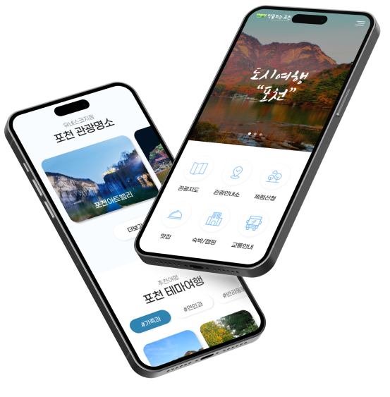

Pocheon Culture Tourism
uiux web design


03포천문화관광(반응형)리뉴얼 설계&구현
포천문화관광지는 각종 체험과 캠핑,그린뷰 등 자연과 함께 힐링할 공간이 많이 준비된 문화관광지로서 여행을 좋아하며 사랑하는 가족,연인,반려동물과 함께할 수 있는 힐링 여행에 초점을 두고 기존에 많은 정보를 눈에 보기쉽게 재배치 목표로 기획했습니다.
02

개선방향 & UI.UX
기존 포천문화관광지 페이지에 있던 많은 콘텐츠들을 방문고객의 시각에서 한눈에 보기좋을 수 있도록 개선을 우선으로 제일 먼저 눈에 보여야 할 것과 필요한 정보는 어떤것인지를 재배치 하였으며 좌우 슬라이드 효과로 많은 양의 정보를 정리하였습니다.
03

Typography & Color
Basics
Prenendard M,B
Point
Korail Round Gothic B
#2E84B1
#000233
#F8FCFF
디자인 100%
코딩 100%
작업기간 : 2024. 03. 25. ~ 29.